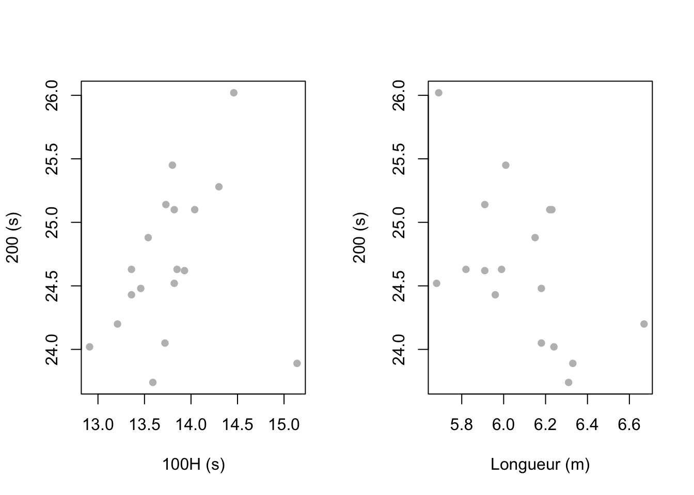
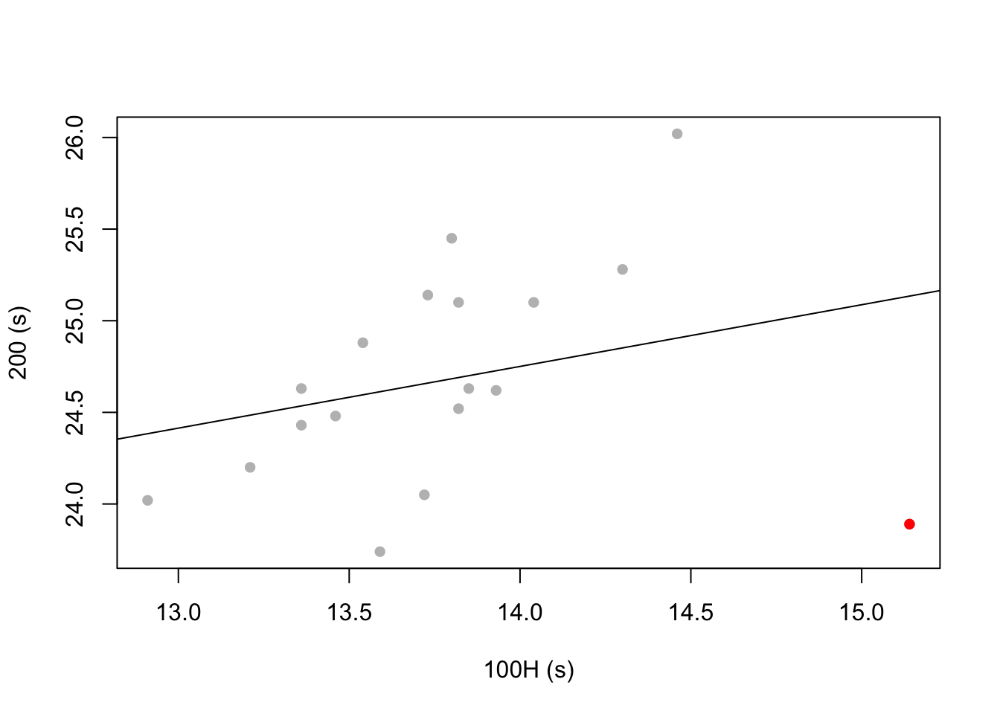

Chapter :5 Tests statistiques (Corrélations)
Ce chapitre concerne cette fois ci les tests à utiliser lorsque 2 variables sont quantitatives.
Nous illustrerons nos propos par un jeu de données caractérisant les résultats d’un heptathlon féminin. Le nombre d’athlètes s’élève à 18 (\(n = 18\)) et le nombre d’épreuve, logiquement à 8 (\(p=8\)). Le nom des lignes correspond au noms des athlètes. Vous pouvez télécharger les données ici
df <- read.table("data/heptathlon_2023.csv", sep=",", header=T, stringsAsFactors = T, row.names = 1)
head(df)## Pays Points X100m Hauteur Poids X200m Longueur Javelot X800m
## Oosterwegel NED 6394 13.46 1.75 13.80 24.48 6.18 56.66 2m13s62
## Kalin SUI 6390 13.21 1.75 12.33 24.20 6.67 46.05 2m15s20
## Brooks USA 6181 12.91 1.75 12.93 24.02 6.24 37.41 2m15s66
## Kunz USA 6126 13.36 1.72 13.54 24.43 5.96 44.68 2m15s98
## Esselink NED 6101 13.36 1.75 13.28 24.63 5.82 46.75 2m17s68
## Weissenberg GER 6055 13.72 1.81 13.67 24.05 6.18 43.42 2m32s655.1 Tests d’indépendance entre 2 variables quantitatives.
5.1.1 Généralités
Objectif des tests d’association : estimer une valeur statistique qui résume la relation entre deux variables que nous nommerons ici \(X\) et \(Y\) dans un échantillon donné.
Pour rappel, un échantillon n’est pas toujours représentatif de la population.
Précédemment, on a mesuré l’association entre 2 variables qualitatives avec le test de \(\chi^2\). Ici on testera l’association entre deux variables quantitatives par un test de corrélation.
On mesure statistiquement la force de la relation entre 2 variables quantitatives dans un échantillon donnée (et uniquement entre 2 variables). Les associations entre plusieurs variables sont possibles, mais ne seront pas abordées dans ce chapitre.
Pour rappel, pas de lien de cause à effet !! JUSTE UNE ASSOCIATION.
Quelques tests statistiques :
Le coefficient de corrélation de Pearson suppose une relation linéaire (PARAMETRIQUE)
Le coefficient de corrélation de Spearman suppose une relation pas forcément linéaire (basée sur les rangs) et donc NON PARAMÉTRIQUE.
Visuellement, on peut se baser sur un diagramme de dispersion bivarié et décrire l’ellipse entourant le nuage de points, plus elle est étroite, plus la relation linéaire sera importante.
Dans l’exemple ci contre, je vous montre deux relations : (1) entre le temps au 100mH et le temps au 200m, (2) entre la performance au saut en longueur et le temps au 200m.
layout(matrix(c(1,2), nrow=1))
plot(df$X100m, df$X200m, xlab="100H (s)", ylab="200 (s)", pch=16, col="gray")
plot(df$Longueur, df$X200m, xlab="Longueur (m)", ylab="200 (s)", pch=16, col="gray")
Que pouvez vous dire des relations entre les variables ?
Est ce que l’on pourrait dire que la vitesse de course est proportionnelle à la longueur de saut ?
5.1.2 Conditions
De la même manière que pour les test précédents, il est nécéssaire de vérifier la normalité des variables via un test du shapiro wilk. Si les 2 variables sont normales alors vous pourrez réaliser soit un test de Pearson (paramétrique) sinon vous devrez faire un test de Spearman (non paramétrique).
Pour rappel, les tests paramétriques ont plus de puissance que les tests non paramétriques. Si les variables sont normales, il faut privilégiez les tests paramétriques.
5.2 Paramètres des tests de correlation : Exemple avec la méthode de Pearson
Dans le test de Pearson, vous allez estimer plusieurs paramètres qui vont permettront de caractériser au mieux une dépendance entre deux variables.
5.2.1 Premier paramètre : \(a\), coefficient linéaire
La fonction lm dans R est très importante. Dans notre cas elle permet de construire la fonction affine \(f(x) = b + ax\) où \(a\) est le coefficient linéaire et \(b\) est l’intercept. Vous pouvez ensuite l’afficher sur le graphique.
##
## Call:
## lm(formula = df$X200m ~ df$X100m)
##
## Coefficients:
## (Intercept) df$X100m
## 20.0347 0.3369Dans l’exemple de la relation entre le temps au 200m et le temps au 100mH, la fonction affine coupe l’axe des abscisse à 20.03” c’est le \(b\). Alors que l’indice \(a\) est de 0.33”. Cela signifie qu’une augmentation de 1” sur 100mH est associé à une augmentation de 0.33” au 200m.
Nous pouvons représenter la fonction affine sur le graphique.
plot(df$X100m, df$X200m, xlab="100H (s)", ylab="200 (s)", pch=16, col="gray")
points(df$X100m[which(df$X100m>15)],df$X200m[which(df$X100m>15)], col="red", pch=16)
abline(coef(lm(df$X200m~df$X100m)))
Que pouvons nous dire de la relation ? et ensuite du point rouge ?
Refaire le graphique en enlevant le point rouge ? Que pouvons-nous dire ?
5.2.2 Second paramètre : \(r\)
\(r\) est le coefficient de correlation qui mesure la force estimée de la relation linéaire entre 2 variables de l’échantillon. Possibilité d’obtenir manuellement le \(r\) à partir des données brutes (X et Y) via la covariance. La covariance est le produit moyen des distances entre les observations et leurs moyennes respectives, soit :
\[ r_{X,Y} = \frac{Cov(X, Y)}{\sqrt{Var(X)}\sqrt{Var(Y)}}\]
avec \(Cov(X, Y) = \frac{1}{N-1} \sum_{i=1}^N{(X_i-\hat{\mu}_X)(Y_i-\hat{\mu}_Y)}\)
et \(Var(X) = \frac{1}{N-1} \sum_{i=1}^N{(X_i-\hat{\mu}_X)^2}\)
ou Ecart type \(X=\sqrt{Var(X)}\).
La covariance permet de répondre à la question : Est-ce que Y varie quand X varie (dépendance) ? Auquel cas, est ce que Y varie dans le même sens que X (quelle direction, définie par le signe de la relation) ?
Si association positive : une observation i avec une valeur de xi supérieure à la moyenne de X devrait également avoir une valeur de yi supérieure à la moyenne de Y.
Prenons le temps au 100mH comme X et le temps au 200m comme Y. Il faut bien définir la variable Réponse (i.e. \(Y\)) ici car elle vous guidera durant les calculs.
- Calculons la \(Cov(X, Y)\)
n <- dim(df)[1]
x_center <- df$X100m-mean(df$X100m)
y_center <- df$X200m-mean(df$X200m)
Covariance <- sum(x_center*y_center)/(n-1)- Calculons la \(\sqrt{Var(X)}\) puis la \(\sqrt{Var(Y)}\)
- Calculons le coefficient de correlation \(r_{X,Y}\).
## [1] 0.2843454Que pouvons-nous dire de cette relation ? un \(r\) de 0.28 vous semble t’il bien refléter la relation ?
Refaire le calcul en enlevant l’individu rouge.
Peu importe la méthode, un coefficient de corrélation se situe toujours entre -1 et 1 :
-1 : forte relation linéaire négative.
0 : pas de relation linéaire.
+1 : forte relation linéaire positive.
5.2.3 troisième paramètre : \(r^2\)
Le \(r^2\) est le coefficient de détermination. Il mesure la variance expliquée par le modèle linéaire.
Le \(r^2\) est forcément compris entre 0 et 1. Plus le \(r^2\) se rapproche de 1, meilleure est la dépendance entre \(X\) et \(Y\).
L’intérêt d’un modèle de régression linéaire réside dans sa capacité à expliquer une partie des variations de la variable Y par les variations de la variable X. Elle mesure l’explication d’une variable par une autre.
Pour calculer le coefficient de détermination, il suffit de reprendre les annotations de l’ANOVA (ANalyse Of VAriance). Dans ce cas, nous avons SCT (Somme des Carrés Totale) traduit la variation totale de Y =
SCE (Somme des Carrés Expliquée) traduit la variation expliquée par le modèle + SCR (Somme des Carrés Résiduelle) traduit la variation inexpliquée par le modèle (c’est l’erreur du modèle (représenté par la droite), c’est à dire qu’il suffit de calculer la distance de chaque points avec le modèle (la droite)).
On appelle coefficient de détermination la quantité suivante :
\(R^2=\frac{SCE}{SCT}\) ou bien \(R^2=1-\frac{SCR}{SCT}\)
model <- lm(df$X200m~df$X100m) ## Nous ajustons un modèle linéaire où la variable réponse est le temps au 200m.
SCT = sum(y_center^2) ## Nous calculons la somme des carrés totale de la variable réponse Y.
SCE = sum(model$residuals^2) ## Puis la somme des carrés non expliquée de la variable réponse Y par X.
r_squared <- 1-(SCE/SCT)
print(r_squared)## [1] 0.08085229- Que pouvons nous dire du coefficient de détermination ? Est-il élevé ?
P.S. : On peut aussi calculer le \(r^2\) juste en mettant au carré le coefficient de correlation \(r\). On retombe sur la même valeur.
## [1] 0.08085229A retenir : l’objectif du modèle linéaire et de l’ensemble des modèles en général est de minimiser l’erreur et donc de minimiser la valeur des résidues associés au modèle (droite, polynôme du 2nd degrée, sinusoïdale, etc…).
5.2.4 quatrième paramètre : \(p value\)
Inférence : est-ce que le coefficient de corrélation r est différent de 0 ? La statistique pour tester \(H_0 : r = 0\) est une statistique que nous avons déjà abordée : la statistique de student.
Calcule de t (la statistique) à partir de r.
\[S_t=\frac{r\sqrt{n-2}}{\sqrt{1-r^2}}\]
Si vous avez compris comment fonctionne les statistiques de tests : l’idée est de comparer l’éloignement entre \(r=0\) et \(\hat{r}\). Dans le calcul de la statistique plus vous avez un \(r\) grand et plus la statistique sera différente de 0 (i.e. lorsque \(r=0\)) et donc vous pourrez refuser \(H_0\) et accepter \(H_1\).
5.2.5 Code R
Je vous joins maintenant les fonctions R qui vous permettent de calculer de manière plus rapide l’ensemble des paramètres
1) Via un modèle linéaire
##
## Call:
## lm(formula = df$X200m ~ df$X100m)
##
## Residuals:
## Min 1Q Median 3Q Max
## -1.24480 -0.25603 -0.07956 0.39133 1.11427
##
## Coefficients:
## Estimate Std. Error t value Pr(>|t|)
## (Intercept) 20.0347 3.9153 5.117 0.000103 ***
## df$X100m 0.3369 0.2839 1.186 0.252802
## ---
## Signif. codes: 0 '***' 0.001 '**' 0.01 '*' 0.05 '.' 0.1 ' ' 1
##
## Residual standard error: 0.59 on 16 degrees of freedom
## Multiple R-squared: 0.08085, Adjusted R-squared: 0.02341
## F-statistic: 1.407 on 1 and 16 DF, p-value: 0.25282) Via la fonction de correlation
##
## Pearson's product-moment correlation
##
## data: df$X200m and df$X100m
## t = 1.1864, df = 16, p-value = 0.2528
## alternative hypothesis: true correlation is not equal to 0
## 95 percent confidence interval:
## -0.2104643 0.6631771
## sample estimates:
## cor
## 0.2843454Que pouvons nous dire ?
Refaire l’analyse sans le point rouge ?
5.3 Test de Spearman
Pour le test de Spearman, c’est exactement la même chose sauf que la formule se base sur les rangs.
\[ r_{X,Y} = \frac{Cov(Rang(X), Rang(Y))}{\sqrt{Var(Rang(X))}\sqrt{Var(Rang(Y))}}\]
- Dans notre exemple, faut-il utiliser le test de Spearman ou bien de Pearson ? Il faut tester la normalité et l’égalité des variances.
Vous pourrez utiliser la méthode de Spearman en modifiant l’argument method comme suit cor.test(X,Y, method="spearman").